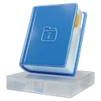

Fiches de révision du CEBToutes les règles à connaître pour le CEB, en 193 fiches courtes : la règle, un exemple et une astuce. Chaque fiche mène à des exercices corrigés tout de suite.
 Français 58 fiches
Français 58 fiches
 -é, -er, -ez ou -ait ?
-é, -er, -ez ou -ait ? Accord du participe passé
Accord du participe passé Choisir une source fiable
Choisir une source fiable- Déterminants et pronoms : les sous-classes
 Épithète et complément du nom
Épithète et complément du nom Être ou avoir au passé composé ?
Être ou avoir au passé composé ? Former un adverbe en -ment
Former un adverbe en -ment Imparfait et passé simple dans un récit
Imparfait et passé simple dans un récit Intensité, certitude et probabilité
Intensité, certitude et probabilité L'accord de l'adjectif
L'accord de l'adjectif L'accord du verbe avec le sujet
L'accord du verbe avec le sujet L'infinitif du verbe
L'infinitif du verbe L'ordre alphabétique
L'ordre alphabétique La ponctuation
La ponctuation Le champ lexical
Le champ lexical Le féminin des noms et des adjectifs
Le féminin des noms et des adjectifs Le groupe nominal
Le groupe nominal Le narrateur et le point de vue
Le narrateur et le point de vue- Le paratexte : autour du texte
 Le participe présent
Le participe présent Le passé composé
Le passé composé- Le pluriel des noms et des adjectifs
- Le sens des mots
 Le vocabulaire
Le vocabulaire Les antonymes (contraires)
Les antonymes (contraires)- Les classes de mots
 Les expressions
Les expressions Les familles de mots
Les familles de mots Les fonctions dans la phrase
Les fonctions dans la phrase Les homophones
Les homophones Les modes du verbe
Les modes du verbe- Les mots composés
 Les mots de liaison (connecteurs)
Les mots de liaison (connecteurs) Les niveaux de langue
Les niveaux de langue Les organisateurs du récit
Les organisateurs du récit Les pronoms
Les pronoms- Les reprises dans un texte
 Les synonymes
Les synonymes- Les temps composés et le futur proche
- Lire : fait, opinion, intention
 Lire entre les lignes (inférences)
Lire entre les lignes (inférences) Mot générique, mot spécifique
Mot générique, mot spécifique Mots à connaître par cœur
Mots à connaître par cœur Participe passé : sans auxiliaire et avec avoir
Participe passé : sans auxiliaire et avec avoir Passé simple et conditionnel présent
Passé simple et conditionnel présent- Pluriels et accords
 Préfixes et suffixes
Préfixes et suffixes Présent, imparfait, futur
Présent, imparfait, futur Réel ou imaginaire ? Vraisemblable ou non ?
Réel ou imaginaire ? Vraisemblable ou non ?- Relire pour corriger
- Repérer le subjonctif et les participes
- Suivre plusieurs consignes
- Sujet et compléments
- Sujet, prédicat et complément de phrase
 Types de textes et intentions
Types de textes et intentions Types et formes de phrases
Types et formes de phrases- Verbes en -er à radical variable
- Voix passive et mise en évidence
 Mathématiques 55 fiches
Mathématiques 55 fiches
- Additionner des fractions
 Aire et périmètre
Aire et périmètre- Arrondir un nombre
- Assemblages de cubes
 Calcul mental et calcul réfléchi
Calcul mental et calcul réfléchi- Calculer avec des fractions
 Calculer avec la monnaie
Calculer avec la monnaie Comparer des fractions
Comparer des fractions Convertir les mesures
Convertir les mesures Diagonales, médianes et hauteurs des quadrilatères
Diagonales, médianes et hauteurs des quadrilatères- Encadrer un nombre décimal
- Ensembles, arbres et tableaux
 Estimer un résultat
Estimer un résultat Établir l'horaire d'une journée
Établir l'horaire d'une journée Formules d'aire des quadrilatères et du triangle
Formules d'aire des quadrilatères et du triangle- Fraction, nombre décimal et pourcentage
 Heures et durées
Heures et durées L'échelle d'une carte
L'échelle d'une carte La division et le reste
La division et le reste- La droite graduée
 La moyenne
La moyenne- La proportionnalité
 La vitesse moyenne
La vitesse moyenne Le calendrier
Le calendrier Le cercle et le disque
Le cercle et le disque- Le signe = et les égalités
- Le vocabulaire des opérations
 Le volume
Le volume- Les angles
 Les axes de symétrie
Les axes de symétrie Les caractères de divisibilité
Les caractères de divisibilité- Les développements des solides
- Les énigmes logiques (tableau à double entrée)
 Les fractions
Les fractions- Les graphes fléchés
- Les mouvements : glisser, retourner, pivoter
 Les nombres décimaux
Les nombres décimaux- ⬢ Les polygones réguliers
 Les pourcentages
Les pourcentages Les priorités et les parenthèses
Les priorités et les parenthèses Les quadrilatères
Les quadrilatères Les quatre opérations
Les quatre opérations Les solides
Les solides- Les suites de nombres
- Les températures
 Les triangles
Les triangles- Lire des données
- Lire, écrire et décomposer les nombres
 Même périmètre, aires différentes
Même périmètre, aires différentes- Multiples, diviseurs et nombres premiers
 Ordres de grandeur des mesures
Ordres de grandeur des mesures- Promotions, bénéfice et perte
- Résoudre un problème
- Symboles et codage en géométrie
- Unités d'aire et de volume
 Histoire-géographie 38 fiches
Histoire-géographie 38 fiches
- Changements et continuités
 Climats et grands milieux
Climats et grands milieux Comparer des vues aériennes
Comparer des vues aériennes Continents, fleuves et montagnes
Continents, fleuves et montagnes Critiquer un document
Critiquer un document Explorations et colonisations (XVe-XVIIIe siècle)
Explorations et colonisations (XVe-XVIIIe siècle) Gallo-Romains et Francs
Gallo-Romains et Francs L'eau et le relief
L'eau et le relief- L'échelle d'une carte
- 🇪🇺 L'Europe et l'Union européenne
- 🇧🇪 La Belgique
 La densité de population
La densité de population- La ligne du temps
- La population du monde
- Le globe : lignes et océans
 Le peuplement de la Belgique
Le peuplement de la Belgique- Le planisphère : continents, océans, lignes
- Le réchauffement climatique
- Les 10 provinces et leurs chefs-lieux
- Les cours d'eau de Belgique
 Les migrations vers la Belgique après 1945
Les migrations vers la Belgique après 1945 Les modes de vie à travers le temps
Les modes de vie à travers le temps- Les moments clés de l'histoire de nos régions
 Les moyens de transport
Les moyens de transport- Les périodes de l'histoire
 Les régions naturelles de Belgique
Les régions naturelles de Belgique Les secteurs d'activité
Les secteurs d'activité Les siècles
Les siècles- Les sources de l'historien
- Lire une carte
- Millénaires, siècles et an 1
 Paysages et habitat
Paysages et habitat Personnages de l'histoire
Personnages de l'histoire Produire et consommer autrement
Produire et consommer autrement- Quelques dates clés
 Régions, Communautés et langues
Régions, Communautés et langues- S'orienter
- Trouver une information
 Sciences 42 fiches
Sciences 42 fiches
 Alimentation et santé
Alimentation et santé Circulation et respiration
Circulation et respiration Classer en ensembles emboîtés
Classer en ensembles emboîtés- Classer les vivants
- Cycles de vie et métamorphoses
 Digestion, respiration, circulation : ensemble
Digestion, respiration, circulation : ensemble- Fait, hypothèse ou jugement ?
- Instruments et unités
 L'air
L'air L'électricité
L'électricité L'énergie
L'énergie- La chaleur et les isolants
 La chaleur voyage du chaud vers le froid
La chaleur voyage du chaud vers le froid La combustion
La combustion La fleur, du pollen au fruit
La fleur, du pollen au fruit La lumière et le son
La lumière et le son La notion d'espèce
La notion d'espèce- La Terre, le Soleil et la Lune
 La vie des plantes
La vie des plantes Le cycle de l'eau
Le cycle de l'eau Le modèle de la ventilation
Le modèle de la ventilation Le régime alimentaire
Le régime alimentaire Le sang
Le sang Le système solaire
Le système solaire Les aimants
Les aimants Les appareils du corps
Les appareils du corps- Les attributs des animaux
- Les chaînes alimentaires
 Les dents
Les dents- Les états de la matière
- Les matériaux
- Les transformations d'énergie
- Limiter les pertes de chaleur
 Lire un tableau ou un graphique
Lire un tableau ou un graphique Mélanges et séparation
Mélanges et séparation Milieux, décomposeurs et champignons
Milieux, décomposeurs et champignons Ovipare ou vivipare ?
Ovipare ou vivipare ? Passer l'hiver
Passer l'hiver- Physique ou chimique ?
- Rythme cardiaque et ventilation
- Trier ses déchets
 Une expérience juste
Une expérience juste